<렛뎀 이론> 신간 도서 런칭 홍보
기존 주력 타깃(40대)을 넘어 2030 세대의 정서(관계 피로도, 현생 등)를 관통하는 핵심 소구점을 발굴하여 타깃 확장을 주도하고, 진정성 있는 인플루언서 협업으로 폭발적인 성과를 이끌어냈습니다.
🚀 핵심 성과 요약
- 전략적 타깃 확장: 도서의 핵심 메시지(통제할 수 없는 것에 집착하지 않는 태도)가 2030의 니즈와 부합함을 간파, 과감한 타깃 확장 제안.
- 사전 붐업 콘텐츠 기획: 2030 세대 문법에 맞는 저자 강연 영상 번역 및 자체 숏폼 콘텐츠 가공·배포로 초기 인지도 급상승 견인.
- 타깃 맞춤형 인플루언서 협업:
- 일상 브이로거 '딤디(98만)': 정성적 접근(손편지 등)을 통해 영상 내 오가닉 노출 및 대규모 증정 이벤트(6,000명 참여) 달성.
- 교양/경제 유튜버 '미키피디아': 저자 인터뷰 기획 및 신간 배본일 맞춤 업로드로 초기 판매 화력 극대화.
📸 프로젝트 갤러리
[유튜버 '딤디' 무가 도서 노출]
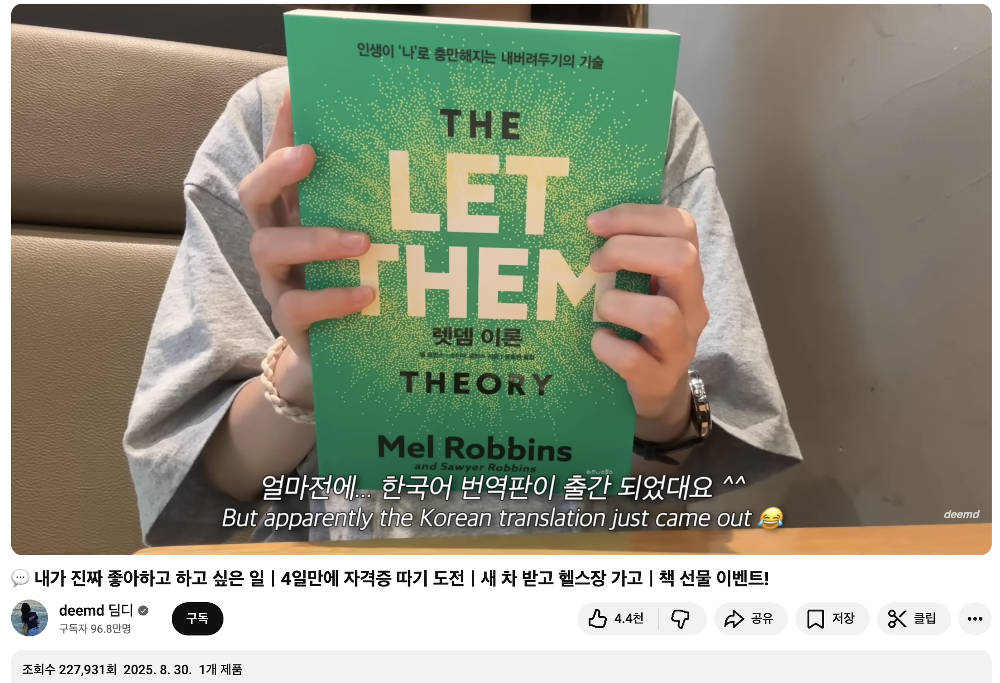
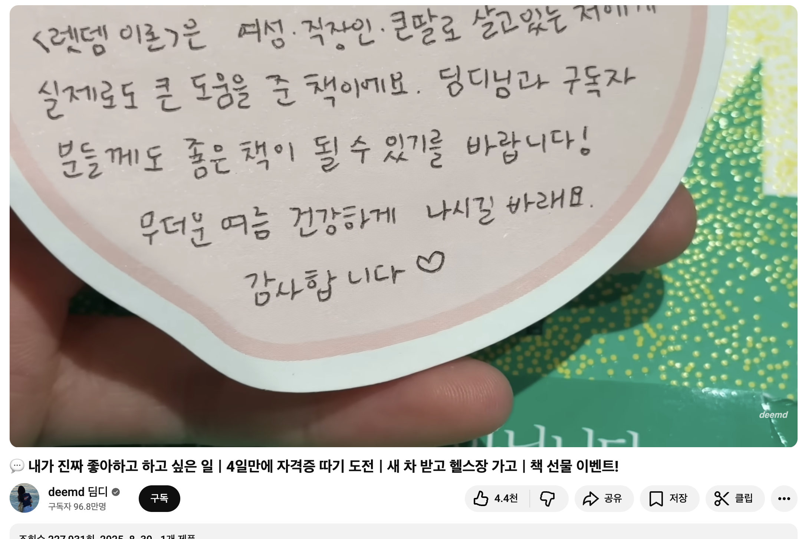
[유튜버 '미키피디아' 저자 인터뷰 진행]
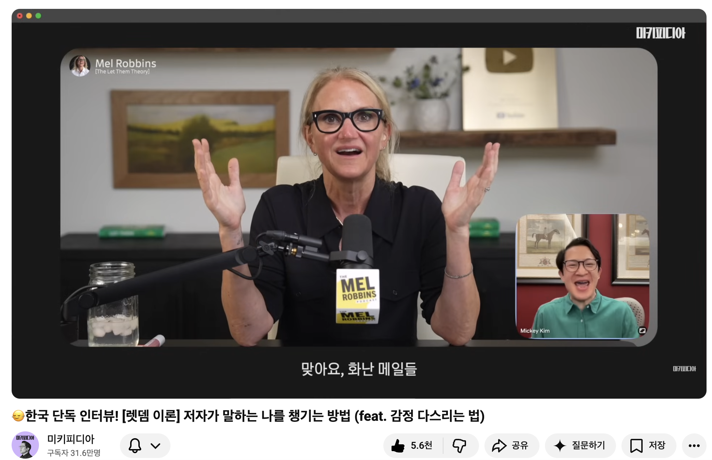
<마침내 특이점이 시작된다> 신간 도서 런칭 홍보
난이도 높은 과학/기술(IT) 분야 도서의 세일즈 특성에 맞춰 전문가 대상 언론 PR로 방향을 잡고, 주요 언론 매체를 통해 오피니언 리더층을 효과적으로 공략했습니다.
🌟 핵심 성과 요약
- 전문가 타깃 PR 전략: 도서의 깊이에 걸맞은 주요 일간지 및 전문 매체 대상의 저자 서면 인터뷰 기획.
- 주요 매체 집중 노출: 유력 매체 기사 게재를 통해 전문가 독자층의 신뢰 확보 및 베스트셀러 진입 견인.
📸 프로젝트 갤러리
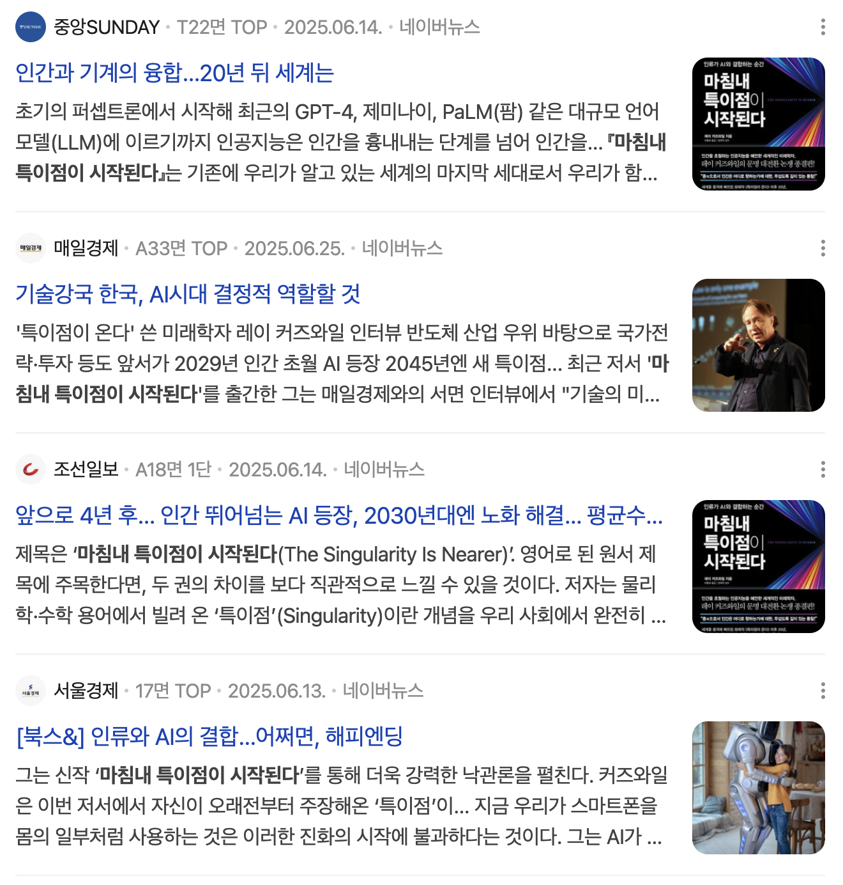
자사 온라인 채널 기획 및 운영
데이터 기반의 지속적인 콘텐츠 최적화 테스트를 통해 채널 도달율을 관리하고, 미개척 채널이었던 X(트위터)를 자사의 주요 마케팅 파이프라인으로 안착시켰습니다.
📈 핵심 성과 요약
- 인스타그램 콘텐츠 최적화 시도: 변화하는 SNS 트렌드에 맞춰 정기적으로 피드 구성을 점검하고 신규 포맷을 반복 테스트하며 최적의 운영 방향 탐색.
- 데이터 기반 모니터링: 유저 반응 데이터를 분석하여 메시지 전달 방식이나 포맷을 지속적으로 개선하려는 노력 경주.
- X(트위터) 채널 선제적 도입: 타깃 시딩 광고 및 성과 분석을 통해 X 채널의 마케팅 유효성을 증명, 현재 자사의 핵심 마케팅 채널로 정착시킴.
📸 프로젝트 갤러리

3기신도시 종합홍보
3기 신도시에 얽힌 대중의 부정적인 이슈와 인식을 환기하기 위해 영상 광고를 기획했습니다. 또한 정부 정책의 산발적인 정보들을 하나로 묶어주는 직관적인 통합 플랫폼 신규 구축을 제안해 원활한 정보 접근을 도왔습니다.
✏️ 주로 했던 일
- 3기 신도시 홍보 컨설팅 진행
- 영상 광고 제작
- 온라인 홍보
- 홈페이지 제작 및 관리
- 온라인 박람회 참여
- 언론사 유튜브 콘텐츠 기획
📊 3기 신도시 홍보 전략 컨설팅
- 사전청약 등 본격적인 3기 신도시 홍보에 앞서 종합적인 홍보 전략 컨설팅 진행
- 사업환경 분석, 홍보현황 진단, 커뮤니케이션 환경 및 현황 분석, 홍보전략 및 프로그램 수립
📺 3기 신도시 광고 제작
- 3기 신도시 사전청약 시행전 대국민 관심 환기를 위한 광고 제작
- 메인카피 “당신의 설렘 그 이상이 되도록” 개발 (카피라이터 협업)
- 수요자들의 진정성 있는 목소리를 담을 수 있는 테스트모니얼 스타일의 광고 제안
🌐 3기 신도시 홈페이지 제작 및 운영
- 무분별하게 흩어져있는 3기 신도시 정보를 한곳에서 접할 수 있는 (구)홈페이지 제작
- 홈페이지 구성 및 페이지 내 정보 배치 등 기획
- 웹개발사와 클라이언트 간 커뮤니케이션
- 모바일 접근성이 높은 반응형 홈페이지로 제작, [청약일정 알리미]를 포함하여 메뉴 구성 및 페이지 기획·제작·관리
- 홈페이지 온라인 이벤트 2회 진행
👀 3기 신도시 온라인 박람회 참여
- 한국경제 집코노미 박람회 부스 참가
- 부스 내 콘텐츠 기획 및 제작(디자이너 협업)
- 부스에 함께 참여하는 지자체 담당자와의 커뮤니케이션 등 진행
📹 언론사 유튜브 콘텐츠 기획
- 3기신도시 관련 머니투데이, 한국경제 등 언론사 유튜브 콘텐츠 기획
📸 프로젝트 갤러리
[홍보 전략 컨설팅]
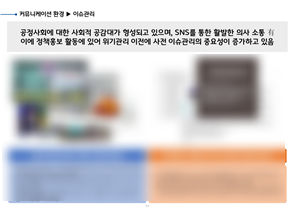
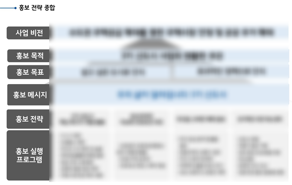
[3기 신도시 TVC]
[3기 신도시 홈페이지]
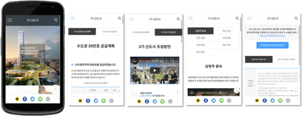
[온라인 박람회]
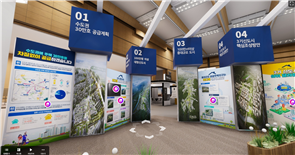
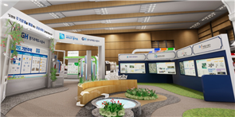
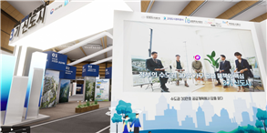
GH 기관 종합 광고 홍보
경기주택도시공사(GH)의 ESG 가치와 기관 브랜딩을 대중에게 친숙하게 전하기 위해 시기별 맞춤형 전략을 기획하고, 이모티콘 및 메타버스 등 뉴미디어를 접목한 프로모션을 실행하였습니다.
✏️ 주로 했던 일
- 브랜딩
- 기관 ESG 사업 관련 메인 슬로건 개발 및 이미지·바이럴 영상 제작, 온라인 이벤트 진행
- 온라인 홍보
- 이모티콘 제작 및 배포, 메타버스 프로모션 기획·제작
🌿 기관 ESG 사업 관련 브랜딩
- 슬로건 개발 및 이미지 광고 제작
- 신문 지면광고, 온라인 배너, 기관 옥외광고 등 게재
- 카피라이터, 디자이너 간 협업
- 바이럴영상 제작(광고 제작사 협업)
- 메인카피 ‘새로운 시도, 새로운 도시’를 바탕으로 대중들에게 친근하게 접근할 수 있는 바이럴 영상 제작
- 제작사-클라이언트 간 커뮤니케이션 진행
- 바이럴영상 확산을 위한 온라인 이벤트 진행
🖥️ 온라인 홍보
- 기관 홍보용 카카오톡 이모티콘 제작 및 배포
- 카카오 공식 협업사 컨택 및 이모티콘 제작 - 기획
- 이모티콘 배포를 위한 온라인 이벤트 진행 - 배포 웹페이지 기획
- 메타버스 프로모션 기획 및 제작
- 메타버스 플랫폼 제페토 내 GH 월드 구축
- 제페토 월드 제작 회사 선정 및 제작 기획
- 제페토 활용 이벤트 기획
📸 프로젝트 갤러리
[GH 기관 브랜딩]
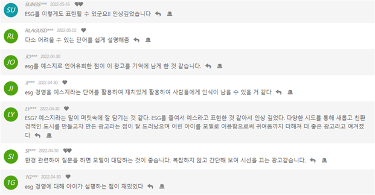
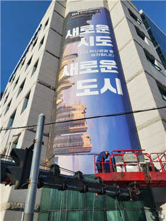
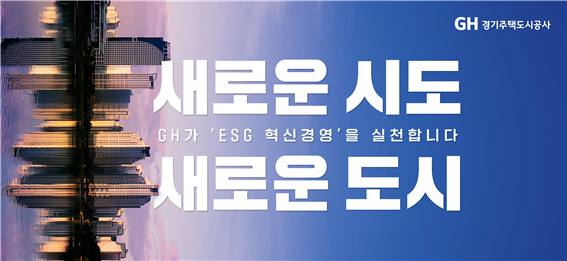
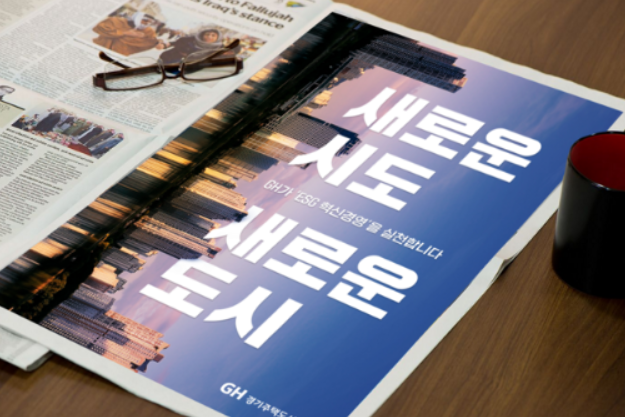
[기관 홍보용 이모티콘 제작]
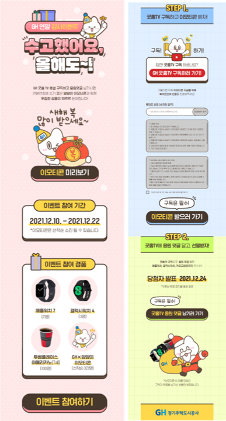
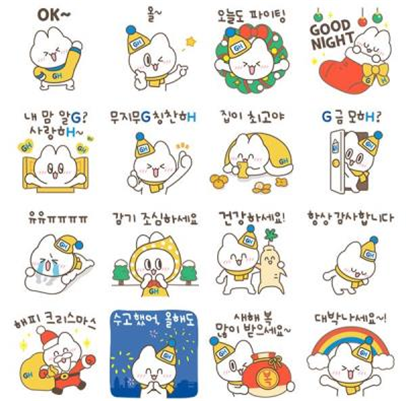
[메타버스 프로모션]
해외감염병 예방 캠페인
흩어져 있는 감염병 예방 정보를 한눈에 볼 수 있도록 플랫폼 개발을 제안하고, 인지도가 부족했던 해외감염병에 대한 관심을 불러일으킬 밈(Meme) 활용 광고와 맞춤형 콘텐츠로 확산을 도모했습니다.
✏️ 주로 했던 일
- 해외감염병 홈페이지 제작 및 운영
- 바이럴 영상 제작
- 오프라인 행사 진행
🌐 해외감염병 플랫폼 제작 및 운영
- 해외감염병 검색 플랫폼 해외감염병NOW.kr 구축
- 홈페이지 제작업체와의 커뮤니케이션
- 현재까지 2019년 당시 기획된 사이트 구성으로 운영
- 홈페이지 기획 및 유입 유도를 위한 이벤트 기획 및 추진
📹 바이럴 영상 제작
- 영상 기획 및 프로덕션과의 커뮤니케이션
- 새롭게 런칭된 홈페이지 ‘해외감염병NOW’ 각인을 방향으로 기획
🎇 오프라인 행사
- 토크콘서트 기획 및 업체 커뮤니케이션
- 관련 온라인 이벤트 기획 및 진행
📢 이미지 광고 기획 및 제작
- 밈을 활용한 이미지광고 제작
- 야인시대 밈을 제안·활용하여 바이럴 유도
- 별도로 질병청에서 진행한 진드기매개 감염병 옥외 광고 제작
- 기타 홍보물 기획
💬 그 외 홍보 활동
- 여행박람회 등 해외감염병 관련 행사 홍보부스 참여
- 부스 벽면, 리플렛 등 콘텐츠 제작 및 부스 운영
- 카드뉴스 제작
- 서포터즈 운영
📸 프로젝트 갤러리
[해외감염병 플랫폼]
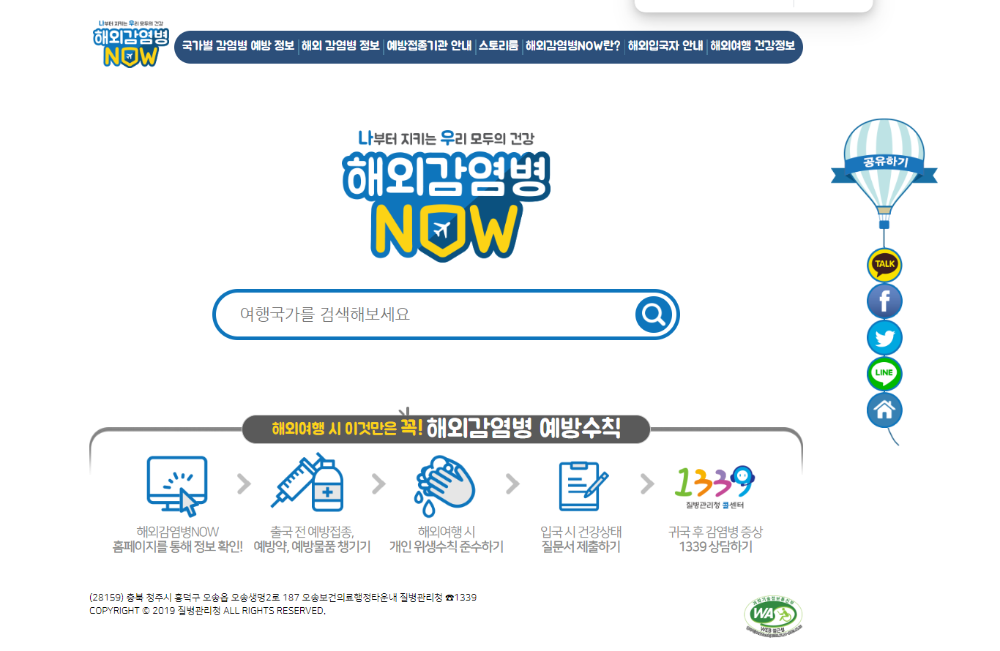
[바이럴영상]
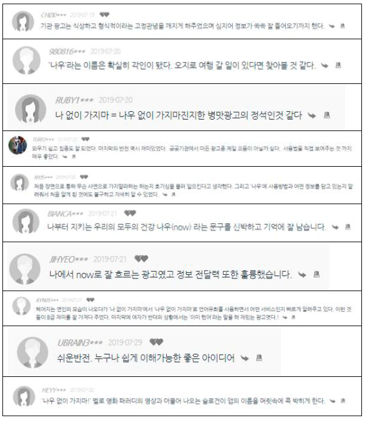
[오프라인 행사]
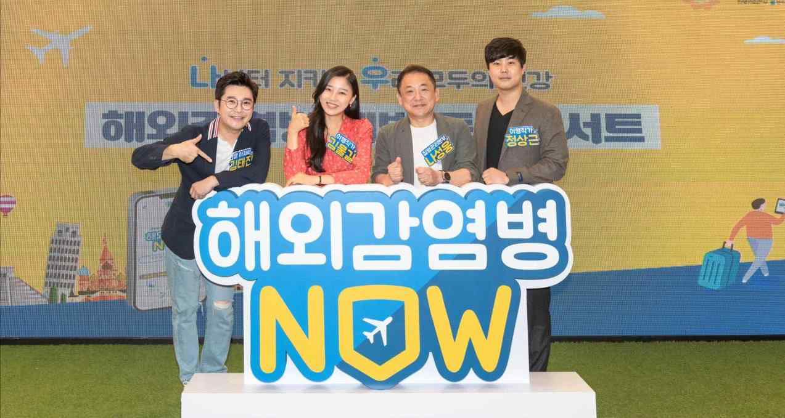
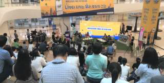
[이미지 광고]
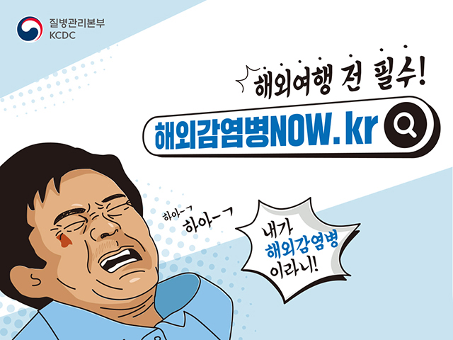
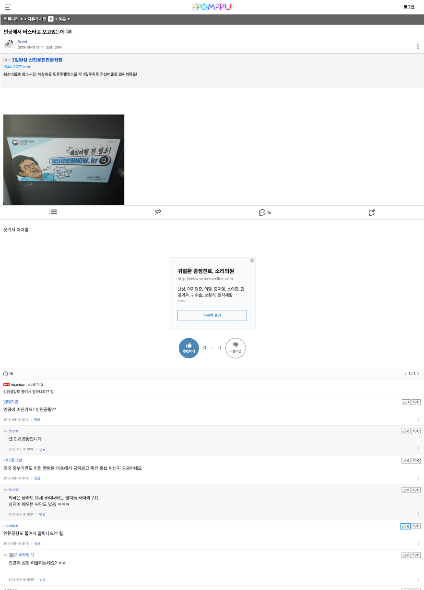
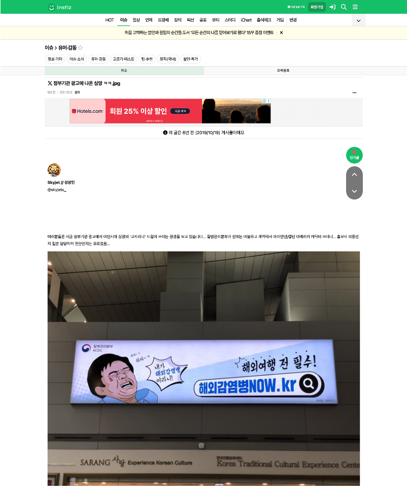
[그외 이미지 광고 및 홍보물]
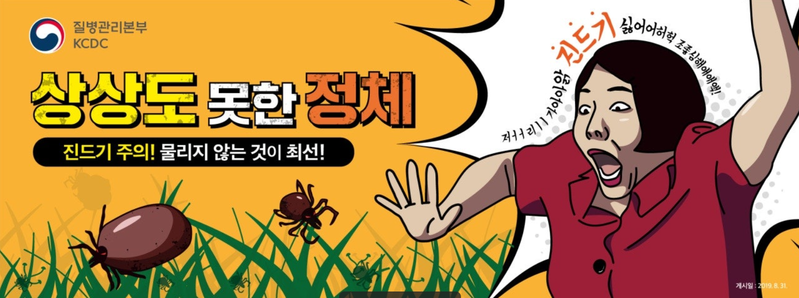
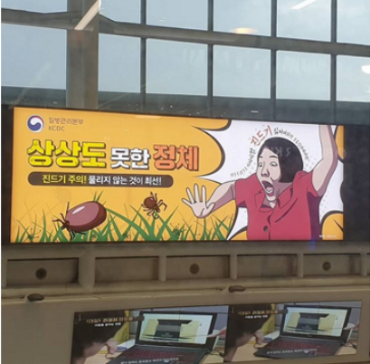
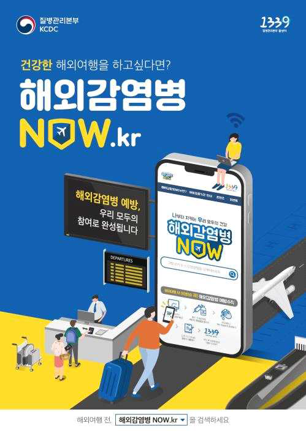
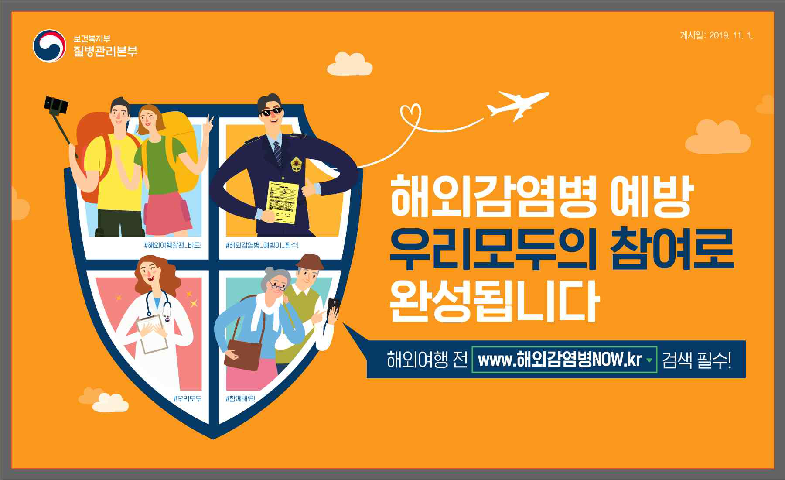
<렛뎀 이론> 신간 도서 런칭 홍보
기존 주력 타깃(40대)을 넘어 2030 세대의 정서(관계 피로도, 현생 등)를 관통하는 핵심 소구점을 발굴하여 타깃 확장을 주도하고, 진정성 있는 인플루언서 협업으로 폭발적인 성과를 이끌어냈습니다.
🚀 핵심 성과 요약
- 전략적 타깃 확장: 도서의 핵심 메시지(통제할 수 없는 것에 집착하지 않는 태도)가 2030의 니즈와 부합함을 간파, 과감한 타깃 확장 제안.
- 사전 붐업 콘텐츠 기획: 2030 세대 문법에 맞는 저자 강연 영상 번역 및 자체 숏폼 콘텐츠 가공·배포로 초기 인지도 급상승 견인.
- 타깃 맞춤형 인플루언서 협업:
- 일상 브이로거 '딤디(98만)': 정성적 접근(손편지 등)을 통해 영상 내 오가닉 노출 및 대규모 증정 이벤트(6,000명 참여) 달성.
- 교양/경제 유튜버 '미키피디아': 저자 인터뷰 기획 및 신간 배본일 맞춤 업로드로 초기 판매 화력 극대화.
📸 프로젝트 갤러리
[유튜버 '딤디' 무가 도서 노출]
[유튜버 '미키피디아' 저자 인터뷰 진행]
<마침내 특이점이 온다> 언론 타깃 PR
난이도 높은 과학/기술(IT) 분야 도서의 세일즈 특성에 맞춰 전문가 대상 언론 PR로 방향을 잡고, 주요 언론 매체를 통해 오피니언 리더층을 효과적으로 공략했습니다.
🌟 핵심 성과 요약
- 전문가 타깃 PR 전략: 도서의 깊이에 걸맞은 주요 일간지 및 전문 매체 대상의 저자 서면 인터뷰 기획.
- 주요 매체 집중 노출: 유력 매체 기사 게재를 통해 전문가 독자층의 신뢰 확보 및 베스트셀러 진입 견인.
📸 프로젝트 갤러리
자사 공식 채널(인스타그램 및 X)
총괄 기획 운영
데이터 기반의 지속적인 콘텐츠 최적화 테스트를 통해 채널 도달율을 관리하고, 미개척 채널이었던 X(트위터)를 자사의 주요 마케팅 파이프라인으로 안착시켰습니다.
📈 핵심 성과 요약
- 인스타그램 콘텐츠 최적화 시도: 변화하는 SNS 트렌드에 맞춰 정기적으로 피드 구성을 점검하고 신규 포맷을 반복 테스트하며 최적의 운영 방향 탐색.
- 데이터 기반 모니터링: 유저 반응 데이터를 분석하여 메시지 전달 방식이나 포맷을 지속적으로 개선하려는 노력 경주.
- X(트위터) 채널 선제적 도입: 타깃 시딩 광고 및 성과 분석을 통해 X 채널의 마케팅 유효성을 증명, 현재 자사의 핵심 마케팅 채널로 정착시킴.
📸 프로젝트 갤러리

청년고용정책 종합홍보
고용노동부에서 추진중인 다양한 청년고용정책의 수요자 정책 체감도를 높이기 위해 다양한 대면홍보 활동을 진행했습니다. 오프라인 홍보를 중심으로 온라인에서 청년들이 정보를 접할 수 있도록 콘텐츠를 만들어 확산시켰습니다.
✏️ 주로 했던 일
- 오프라인 홍보
- 커피트럭을 활용한 전국 대학 방문 프로모션
- 청년 참여 공모전, 서포터즈 진행
- 온라인 콘텐츠 제작
🚚 캠퍼스 커피트럭 투어
- 커피트럭을 제작해 전국 대학을 방문하며 청년고용정책 홍보
- 전국 25개 학교 및 기타 행사 장소에서 개최
- 워크넷 어플리케이션 다운로드 안내, 홍보영상 상영
- 이동고용센터 부스, 찾아가는 정책설명회 및 토크콘서트 등을 함께 진행
- 각 지역의 지방고용센터와 사전 협의 및 협업
- 고용노동부 장관이 참여하는 토크콘서트 진행
🧑🎓 청년 참여 서포터즈 및 공모전 진행
- 청년 고용 서포터즈 운영
- 서포터즈 모집, 발대식 및 해단식 등 진행
- PR동아리 연계 공모전 진행
- 동아리 섭외, 작품 접수, 시상식 등 진행
- 취업수기 공모전 진행
- 지방 고용센터 협업하여 수기 공모전 모집 홍보, 시상식 등 진행
- 워크넷 개선방안 아이디어 공모전
📸 갤러리 및 아카이브
[캠퍼스 커피트럭 운영 현장]
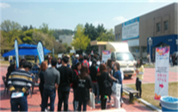
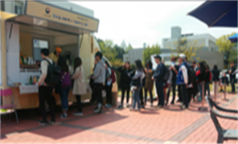
[장관 참여 토크콘서트 현장]
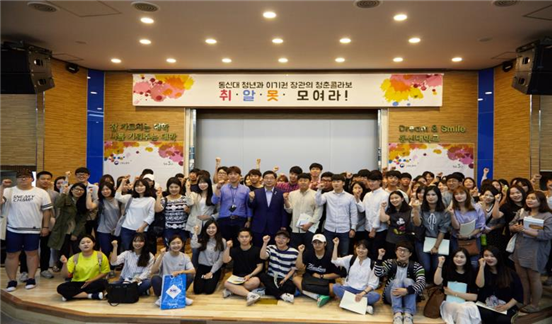
[서포터즈 및 공모전]
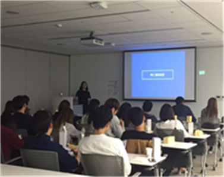
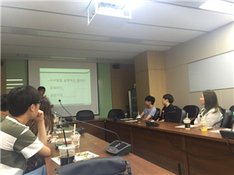
6차산업 종합홍보
6차산업 우수사례 발굴을 통해 6차산업 사업자의 경쟁력을 강화하고 소비자로부터 인지를 높이기위해 언론 대상 홍보활동과 함께 온오프라인 콘텐츠를 기획하고 제작했습니다.
✏️ 주로 했던 일
- 전체 프로젝트 관리
- 언론 및 온라인 콘텐츠 제작
📰 보도자료 작성, 기획기사 및 기고 기획
- 이달의 6차산업인 보도자료 작성
- 6차산업 우수 사업자 및 관계자 인터뷰 등을 활용한 기획기사 기획 및 초안 작성
- 인플루언서 활용 기고 기획 및 초안 작성
🌐 온라인 콘텐츠 제작
- 카드뉴스 제작
- 6차산업 SNS 게재용 카드뉴스 제작 - 보도자료 활용 등
- 여행에 미치다 협업 콘텐츠 기획
- 바이럴 영상 제작
- 트렌드에 맞춰 6차산업 사업지를 감성 여행지로 소개
- 6차산업 상품을 활용한 레시피 영상 제작
📸 프로젝트 갤러리
[온라인 바이럴 영상]
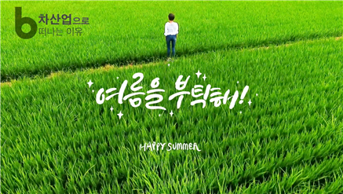
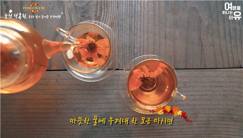
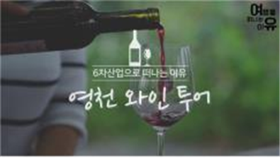
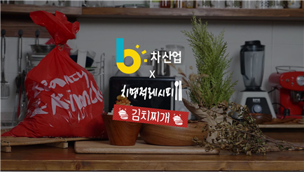
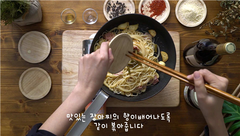
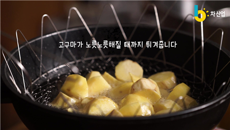
[SNS 채널 콘텐츠]
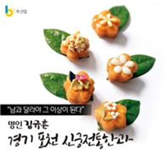
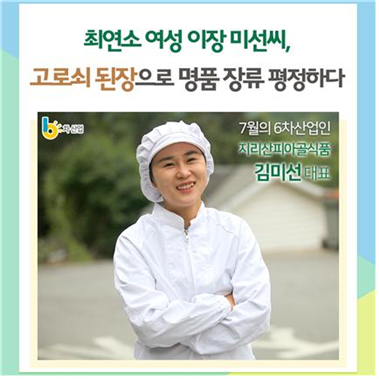
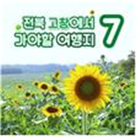
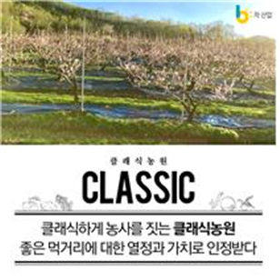
[보도자료 작성]
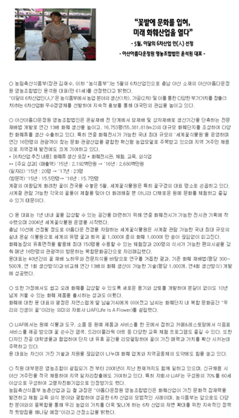
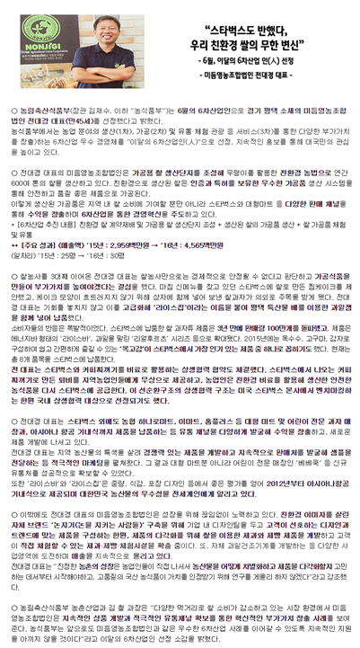
문화역서울284 기관 및 프로그램 홍보
옛 서울역을 복원하여 복합문화공간으로 재탄생한 문화역서울 284에서 진행되는 전시 및 프로그램과 기관 홍보를 맡았습니다. 블로그, 페이스북을 통해 진행되는 전시와 프로그램들을 안내하는 콘텐츠와 문화역서울284가 가진 역사적 가치를 보여주는 콘텐츠를 기획했습니다.
✏️ 주로 했던 일
- 온라인 콘텐츠 제작
- 블로그, 페이스북 콘텐츠 제작
- 언론홍보 지원
- 보도자료 작성, 기자간담회 진행지원, 기획기사 취재지원, 미디어 관리 등
🖥️ 온라인 콘텐츠 제작
- 페이스북 및 블로그 콘텐츠 제작 및 운영
- 기관 및 프로그램 소개 콘텐츠 제작
- 작가 및 관객 인터뷰 콘텐츠 제작
- 역사적 사료를 활용한 기관 콘텐츠 제작
- 파워블로거 관리
- 페이스북 이벤트 진행
📰 언론홍보 지원
- 보도자료 작성 및 배포
- 기타 언론홍보 지원
- 기획기사 및 기자 취재 지원
- 기자간담회 진행 지원
📸 프로젝트 갤러리
[전시/프로그램 언론 홍보 지원]
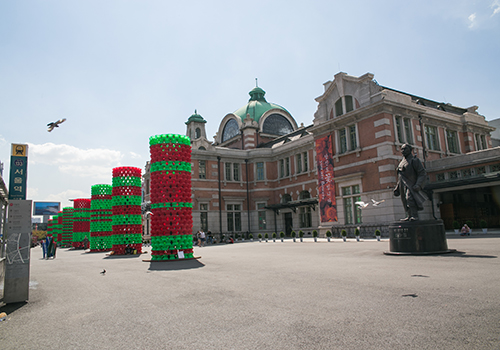
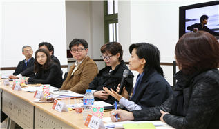
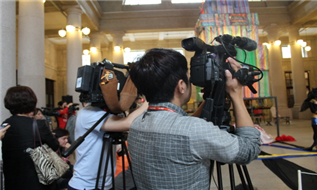
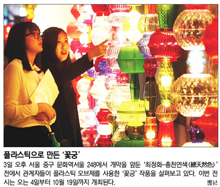
[온라인 콘텐츠 제작]
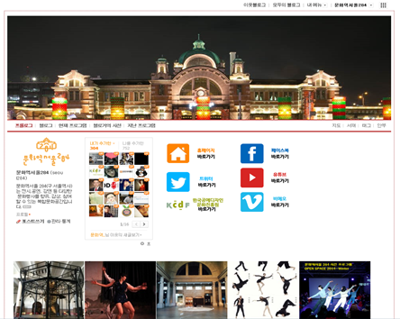
한복진흥센터 기관 종합홍보
다양한 매체를 통해 대중에게 한복의 가치를 알리고자, 개설 초기였던 블로그와 페이스북 채널의 전략을 수립했습니다. 특히 타깃을 세분화하여 젊은 세대가 공감할 수 있는 전용 콘텐츠를 기획하고 현장 언론 홍보를 수행했습니다.
✏️ 주로 했던 일
- 온라인 콘텐츠 제작
- 블로그 및 페이스북 콘텐츠 제작
- 행사 및 언론홍보 지원
🖥️ 온라인 콘텐츠 제작
- 블로그 및 페이스북 콘텐츠 제작
- 기존의 홍보 타깃에서 젊은 세대를 타깃으로 한 콘텐츠 제안 및 제작
- 파워블로거 관리
🎙️ 행사 및 언론 홍보 지원
- 한복의 날 기자간담회, 한복의 날 당일 행사 등 지원
📸 프로젝트 갤러리
[한복의 날 기자간담회 및 행사 현장]
[한복진흥센터 온라인 콘텐츠]
경주월성 발굴사업 홍보 컨설팅
월성 발굴조사가 장기적인 발굴조사 사업으로 힘을 얻기 위해 이해관계자 및 대국민의 관심도 제고를 위한 전략적인 중·장기 홍보 전략이 필요한 시기였습니다. 이를 위해 경주 월성 발굴조사에 대 통합적이고 균형적인 중장기 홍보 전략을 수립하였습니다.
✏️ 주로 했던 일
- 자료 조사
- 국내외 우수 사례, 홍보현황 등
- 홍보 전략 도출 및 프로그램 개발
📸 프로젝트 갤러리
[커뮤니케이션 전략 컨설팅 보고서 및 실행 가이드]